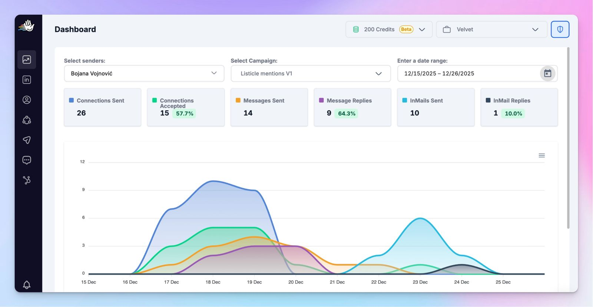
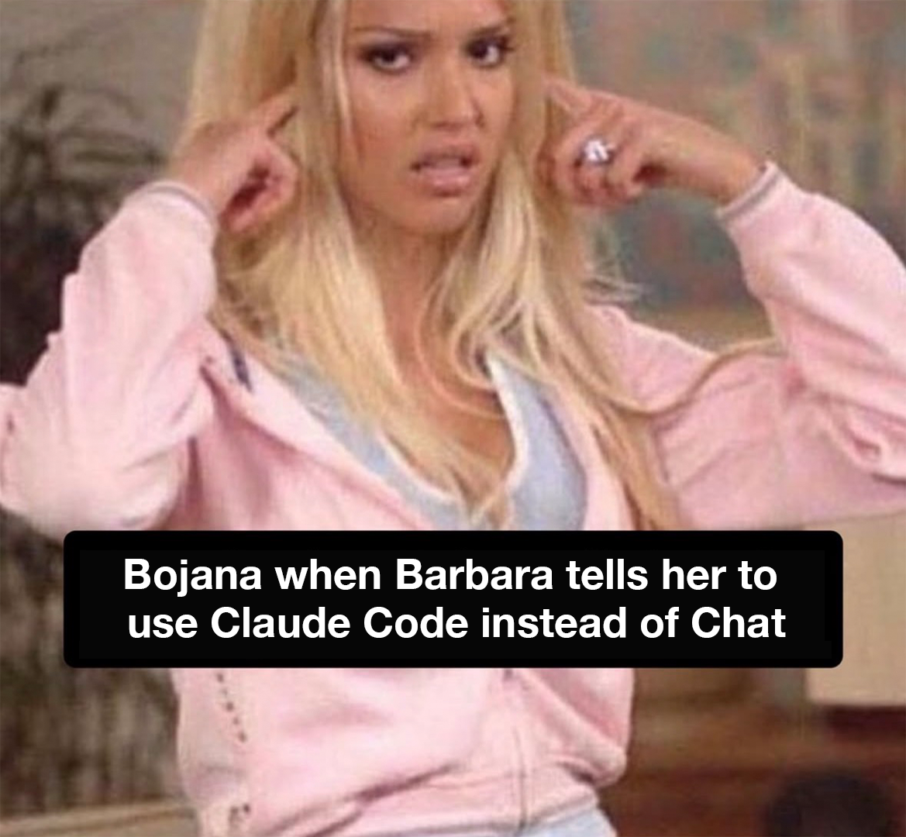

Build a repeatable LinkedIn content distribution system that turns every content piece into a minimum of 10 derivative assets across multiple channels. This workflow covers how to define your ICP, map distribution channels, build targeted outreach campaigns with HeyReach and Clay, and use Claude to generate relevant outreach messages that get replies. Includes the exact campaign structure that produced a 57% reply rate on a link building campaign.
Workflow Description
Most B2B teams create content and then post it once on LinkedIn. That is a distribution problem, not a content problem. This workflow treats every content piece as a source asset that feeds into a structured distribution system across 10 or more channels.
The system combines AI-powered ICP analysis with automated outreach tools to make sure the right content reaches the right people. You will use Claude for prospecting research and message generation, HeyReach for LinkedIn outreach automation, Clay for lead enrichment, and Ahrefs for competitive content analysis.
This is an operational workflow, not a content strategy document. By the end, you will have a working distribution system that takes a single content asset and pushes it through the channels where your ICP actually spends time.
Before You Begin
Tools you'll need open
- Claude Code (for ICP analysis, competitor research, and message generation)
- HeyReach (LinkedIn outreach automation with multi-account sending)
- Clay (lead enrichment and data workflows)
- Ahrefs (competitor backlink analysis and content research)
- Trigify (signal-based prospecting for identifying active prospects)
What you'll need before starting
- A content piece ready for distribution. This can be a YouTube video, blog post, webinar recording, or any substantial content asset. The system works best when the source material contains concrete data or original insights.
- A list of your existing customers or engaged audience. You need this for the ICP analysis step. Export your CRM contacts, LinkedIn connections who engage with your content, or newsletter subscribers with job title data.
- LinkedIn accounts connected to HeyReach. The outreach component requires at least one LinkedIn account connected to HeyReach. Multiple accounts increase sending capacity.
- Access to Ahrefs or a similar SEO tool. You need this for competitor backlink analysis in the outreach campaign step. If you use Claude Code with Ahrefs MCP integration, the research step becomes significantly faster.
How It Works
The distribution system follows three stages. Each stage builds on the previous one and produces specific outputs you will use in the next step.
ICP analysis → Distribution channel mapping → Content derivative production → Outreach campaign setup → Human handoff on response
The core principle: not all content goes to all channels. Some content is built for search, some for social, some for email, and some for direct outreach. The channel mapping step determines where each derivative piece belongs.

A single YouTube video becomes: shorter video clips, community posts, blog placements on external sites, additional blog articles on your own site, downloadable playbooks, newsletter content, posts in closed communities, LinkedIn posts across multiple accounts, outreach campaigns to relevant prospects, and sales enablement materials for your team.
Build Instructions
Export your existing customer list and LinkedIn engagement data. Feed this into Claude and ask it to identify patterns in job titles, company sizes, industries, and seniority levels. Do not guess your ICP based on who you think should buy. Build it from who actually engages and converts. For B2B startups, common segments include content marketers, heads of content or growth, and marketing managers at mid to senior level. The output of this step is a written ICP document with specific job titles, company characteristics, and the problems they are trying to solve.
List every channel where your ICP consumes content. For each channel, define what format the content needs to be in and what purpose it serves. A YouTube video serves discovery. A LinkedIn post serves engagement. A newsletter serves retention. An outreach message serves direct conversion. Not every derivative piece goes everywhere. Match content to the channel where it creates the most value for the person receiving it.
Take your source content and produce a minimum of 10 derivative pieces. Use Claude to draft each derivative in the format appropriate for its target channel. A 20-minute YouTube video can produce: 3 to 4 short clips (under 90 seconds each), 5 or more LinkedIn posts (each covering a different angle), 1 to 2 blog articles expanding on specific points, 1 newsletter recap, 1 playbook or checklist, and talking points for your sales team. Each derivative should stand alone without requiring the audience to watch the original.
Connect Claude to Ahrefs via MCP to pull competitor backlink data and identify sites linking to similar content. Feed this data into Clay for enrichment: pull LinkedIn profiles, verify email addresses, and add company information. The output is a clean lead list of people who have already demonstrated interest in content like yours. This step produced the 57% reply rate campaign because the prospects were pre-qualified by their existing linking behavior.

Import your enriched lead list into HeyReach. Build a sequence with a connection request followed by 1 to 2 follow-up messages. For connection requests: if you cannot reference something specific about the person's content or recent activity, send a blank request. Blank connection requests outperform ones with generic messages. For follow-up messages, reference the specific content piece you are distributing and explain why it is relevant to their work. Keep messages under 300 characters. No pitching in the first message.
Set up HeyReach to stop the automated sequence the moment a prospect replies. When a response comes in, a human takes over the conversation. Automated follow-ups after someone has already responded destroy trust. The automation handles volume. The human handles the relationship. Check your inbox at least twice daily during active campaigns and respond within 4 hours during business hours.
Quality Checklist
Before launching any outreach campaign
- Does your target list match your ICP document precisely (job titles, company size, industry)?
- Have you verified that each prospect has a reason to care about the content you are sharing?
- Is your connection request blank or genuinely relevant (not generic personalization)?
- Are follow-up messages under 300 characters?
- Is the automated sequence configured to stop on reply?
- Do you have a human assigned to handle responses within 4 hours?
Before publishing content derivatives
- Does each derivative piece stand alone without requiring the original content?
- Have you matched each piece to the correct channel (search, social, email, or direct)?
- Did you produce at least 10 derivative pieces from the source content?
- Are LinkedIn posts formatted for LinkedIn (not article blocks of text)?
- Do short video clips have a hook in the first 3 seconds?
For the distribution system overall
- Is your ICP document based on actual data, not assumptions?
- Have you documented which channels produce engagement vs. conversions?
- Are you tracking reply rates against the 15 to 18% benchmark?
Common Mistakes to Avoid
- Blasting the same content to every channel. A LinkedIn post, a blog article, and an outreach message serve different purposes. If you copy-paste the same text across all three, you are wasting two of those channels. Adapt the format, length, and angle for each destination.
- Using generic personalization in outreach. Messages like "I saw you work at [Company]" or "I noticed you're based in [City]" perform worse than no personalization at all. If you cannot reference something specific about the person's content or recent work, send a blank connection request instead.
- Optimizing message copy before fixing your target list. If your reply rate is low, the problem is almost always the list, not the message. A relevant message sent to the wrong person gets ignored. A basic message sent to the right person gets a reply. Fix your ICP and prospecting before rewriting your outreach.
- Pushing volume for the sake of volume. Content inflation is real. Publishing 20 mediocre LinkedIn posts per week devalues your entire content presence. Five well-targeted posts distributed to the right people through the right channels will outperform 20 generic posts every time.
- Leaving automated sequences running after a reply. If someone responds to your outreach and then receives another automated follow-up, you have lost them. Configure your tool to stop the sequence immediately on reply and have a human take over.
- Skipping the ICP analysis. Jumping straight to outreach without defining who you are targeting is the most expensive mistake in this workflow. Every downstream step depends on the accuracy of your ICP. Spend the time on this step.
Handling Special Situations
When your content is niche and your audience is small
Small audiences make targeting easier, not harder. With fewer than 1,000 potential prospects, you can research each person individually and write highly specific outreach messages. The 57% reply rate campaign worked because the list was small and every prospect was pre-qualified. Do not try to scale a niche audience with volume. Scale it with relevance.
When prospects are active on LinkedIn but do not accept connection requests
If your connection acceptance rate is below 1 in 5, review your LinkedIn profile first. Prospects evaluate your profile before accepting. Make sure your headline, about section, and recent posts clearly communicate what you do and why it is relevant to them. A strong profile with a blank connection request outperforms a weak profile with a personalized message.
When you are distributing content for a product you are building (not an agency)
The same system works for in-house teams. The difference: your ICP is your potential customer, not a client's audience. Use your product's user data and CRM to build the ICP. Your content derivatives should include sales enablement materials (one-pagers, demo scripts, case study summaries) in addition to the marketing content. Give your sales team the same derivative content so they can use it in conversations.
When a campaign gets low reply rates
Before rewriting your messages, check three things in order. First, is your target list accurate? Pull 20 random profiles from the list and verify they match your ICP. Second, are you reaching active LinkedIn users? Profiles with no activity in 30 or more days will not respond regardless of your message. Third, is your content relevant to their current priorities? If all three check out and reply rates are still low, then test new message copy.
When you have multiple products or service lines
Run separate campaigns for each product or service. Do not combine audiences. Each product has a different ICP, and mixing them in one campaign dilutes your targeting. The extra setup time pays for itself in higher reply rates because every message is relevant to the specific person receiving it.
Measuring Success
Outreach performance benchmarks
- Connection acceptance rate: 1 in 5 connections accepted is the baseline. Below that, your profile or targeting needs work.
- Reply rate: 15 to 18% is the industry benchmark for LinkedIn outreach. Well-targeted campaigns with relevant messaging consistently hit 25 to 40%. The link building campaign described in this workflow hit 57% by combining Claude-powered research with pre-qualified prospects from Ahrefs data.
- Content derivatives per source asset: Minimum 10 derivative pieces per original content asset. Track this as a production metric to make sure you are extracting full value from every piece you create.
Distribution system health
- Channel coverage: Each content piece should appear in at least 5 distinct channels (LinkedIn, blog, newsletter, communities, outreach)
- Response time on replies: Under 4 hours during business hours. Prospects who reply expect a human conversation, not a 48-hour wait.
- Human handoff rate: 100% of replies should be handled by a human. If automated messages are going out after replies, your system is broken.
What to optimize first
- If reply rates are below 15%: fix your target list and ICP, not your messages
- If connection rates are below 1 in 5: fix your LinkedIn profile and prospect quality
- If you are producing fewer than 10 derivatives per content piece: build a distribution checklist and follow it for every asset
The Prompts
Prompt 1: ICP analysis
Prompt 2: Distribution channel selection
Prompt 3: Outreach campaign crafting
Expected Results
- A documented ICP built from actual engagement and conversion data, not assumptions
- A distribution channel map that specifies where each content derivative belongs and why
- A minimum of 10 derivative content pieces from every source asset you produce
- A working outreach campaign in HeyReach with targeted prospects, relevant messaging, and automatic human handoff on reply
- Reply rates above the 15 to 18% industry benchmark on well-targeted campaigns
- A repeatable system you can run for every content piece you publish going forward
- A distribution checklist your team can follow without needing to reinvent the process each time
Frequently Asked Questions
What is LinkedIn content distribution for B2B?
LinkedIn content distribution for B2B is the process of taking a single content piece and systematically pushing it across multiple channels to reach your target audience. This includes derivative content like shorter videos, community posts, blog placements, newsletters, LinkedIn outreach campaigns, and sales enablement materials. The goal is to extract maximum reach from every piece of content you produce rather than posting it once and hoping for organic traction.
How many derivative pieces should each content asset produce?
Every content piece should spawn a minimum of 10 derivative content pieces. A single YouTube video can become shorter clips, community posts, blog placements, additional blog articles, playbooks, newsletter content, posts for closed communities, LinkedIn posts across multiple accounts, outreach campaigns, and sales enablement materials. If you are producing fewer than 10 derivatives, you are leaving distribution value on the table.
Does personalization matter in LinkedIn outreach?
The right kind of personalization matters. Reading someone's content and referencing specifics works. Generic personalization like mentioning where someone lives or restating their job title does not. Based on analysis of 96,051 campaigns, relevance and good prospecting matter more than message personalization. Blank connection requests actually outperform ones with generic messages. Only personalize if you have something genuinely specific to say.
What reply rate can I expect from LinkedIn outreach campaigns?
Industry benchmarks sit around 15 to 18% reply rates. With highly targeted prospecting and relevant messaging, reply rates of 25 to 40% are common. On a link building campaign using Claude connected to Ahrefs via MCP, Clay for enrichment, and HeyReach for sending, this workflow produced a 57% reply rate. The variable that matters most is list quality, not message copy.
Should I send a connection request with or without a message?
If you do not have something genuinely relevant to say, send a blank connection request. Blank requests outperform ones with generic messages. Only include a message if you can reference something specific about the person's content, company, or recent activity. A message that adds no value performs worse than no message at all.
What tools do I need for B2B LinkedIn content distribution?
The core stack includes HeyReach for LinkedIn outreach automation, Clay for lead enrichment, Ahrefs for competitor and content analysis, Claude Code for AI-powered prospecting and message generation, and Trigify for signal-based prospecting. You do not need all of these on day one. Start with HeyReach and Claude, then add enrichment tools as your campaigns scale.
How do I define my ICP for LinkedIn outreach?
Build your ICP from data, not assumptions. Analyze your existing customers and engaged audience to identify patterns in job titles, company sizes, industries, and seniority levels. For B2B startups, common segments include content marketers, heads of content or growth, and marketing managers at mid to senior level. Use Claude to analyze your LinkedIn engagement data and pull out the specific titles and company characteristics that convert.
What is content inflation and how do I avoid it?
Content inflation happens when you push volume for the sake of volume, which devalues everything you publish. Avoid it by matching content to the right channel instead of blasting everything everywhere. Some content is built for search, some for social, some for email, and some for direct outreach. Not every piece belongs on every channel. Five targeted posts outperform 20 generic ones.
When should automation stop and a human take over in LinkedIn outreach?
Automation should stop the moment a prospect responds. When the system detects a reply, it pauses the sequence immediately and a human takes over the conversation. Automated follow-ups after someone has already responded destroy trust and make the outreach feel robotic. The automation handles the initial contact at scale. The human handles the relationship.
Can I use this distribution system without HeyReach?
You can apply the distribution framework with any LinkedIn outreach tool. HeyReach is used in this workflow because of its multi-account sending capabilities and campaign analytics. The principles of targeted prospecting, relevant messaging, and human handoff on response apply regardless of which tool you use. The ICP analysis and content distribution mapping steps work with any outreach platform.
How do I measure if my LinkedIn distribution system is working?
Track three metrics: connection acceptance rate (benchmark is 1 in 5 connections accepted), reply rate (benchmark is 15 to 18%, top performers hit 40% or higher on targeted campaigns), and content derivatives per original piece (target minimum 10). If your reply rates are below benchmark, the problem is almost always your target list, not your message copy.
Want more like this?
One email per week. Recaps, prompts, and lessons from every live session.